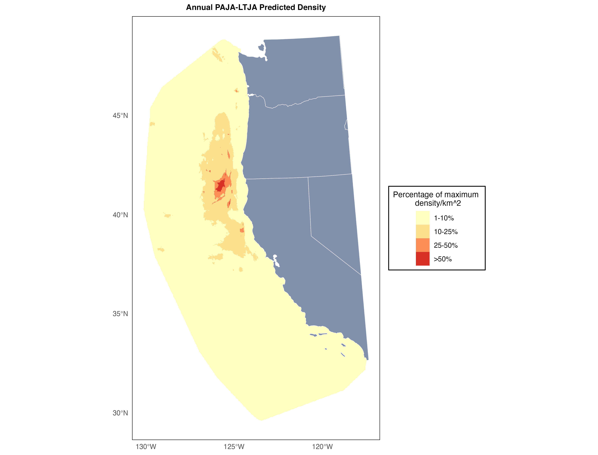
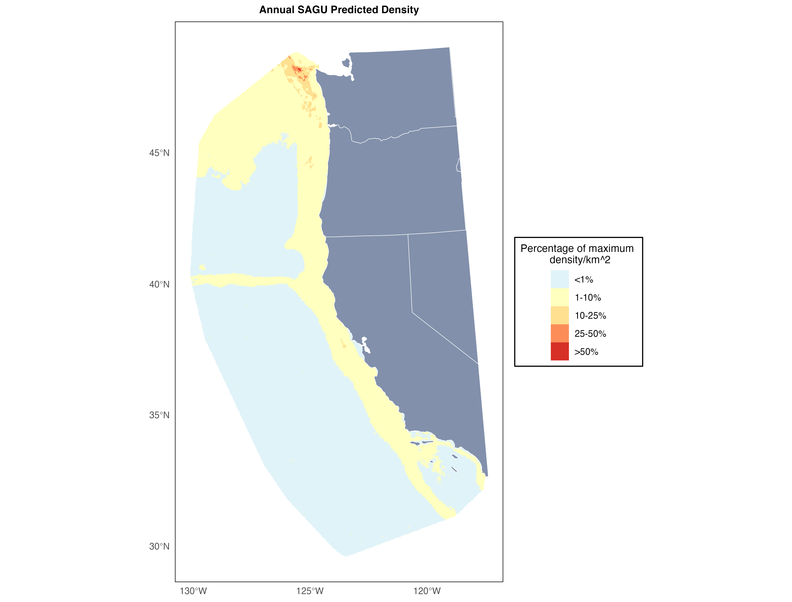
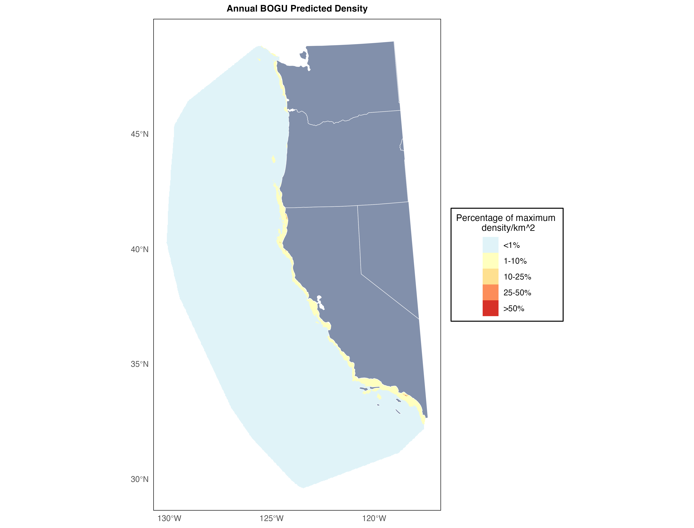
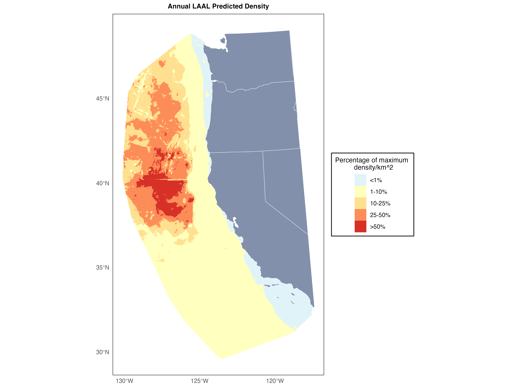
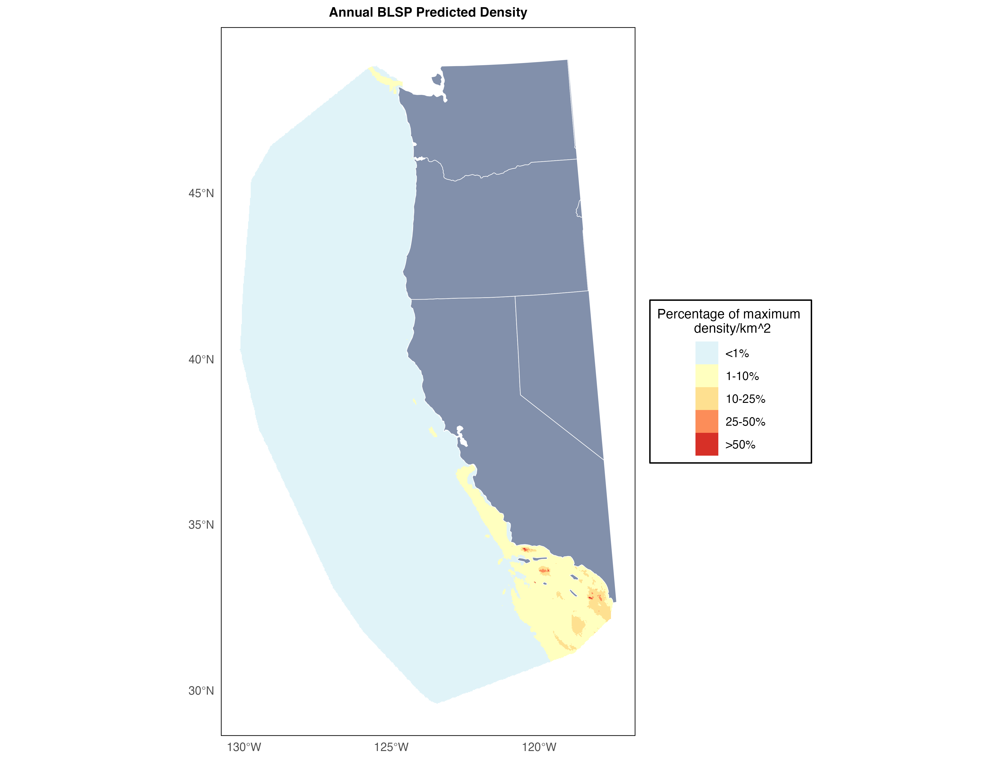
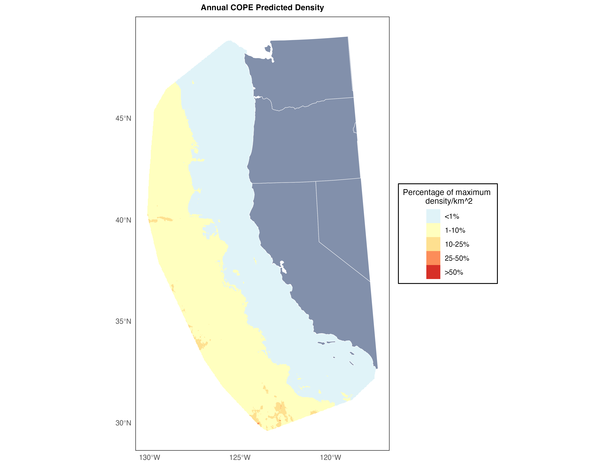

Rare California Seabird Distribution Expert Elicitation Exercise
Thank you for helping us with this work! We hope that this exercise should take you less than an hour to complete. Please read the instructions below carefully before filling out your responses in the spreadsheet that has been provided to you via email.
Purpose/Application
Project Context
There are multiple components of vulnerability to offshore wind energy for seabird species. We have existing tools that help us identify where birds are (i.e., SDMs such as Leirness et al., 2021), how sensitive birds may be to collision or displacement impacts (i.e., vulnerability indices such as Kelsey et al., 2018), and ways of describing bird population status (i.e., IUCN Red List status, state and federal listings, etc). There have also been efforts to combine these metrics in various ways for various purposes, primarily for facility site selection decisions (e.g., the refinement of the now-halted wind energy lease areas in Oregon). However, these tools have typically been produced on regional scales – we saw a need to develop a tool that could combine these existing understandings of the components of vulnerability to wind energy development to rank species vulnerability based on the placement of lease areas in any given region developing wind energy. Our primary purpose of the tool is to prioritize species for compensatory mitigation/offsetting projects by understanding which species are most vulnerable to impact, however, by helping categorize species vulnerability for given leases this tool could also be used to prioritize research and monitoring projects. The purpose of this paper is two-fold – my goal is to create an approach to combine these metrics of vulnerability that can be applied to any region developing offshore wind energy, and then demonstrate the application of the tool by using it to provide priority rankings for species in the California Current Ecosystem based on the currently identified offshore wind development areas on the Pacific Outer Continental Shelf (POCS).
Utility of Expert Elicitation Exercise
We are using the Leirness et al., 2021 species distribution maps of seabirds on the POCS to inform how exposed seabirds in the region will be to the proposed wind energy development areas. These models were produced based on bird sighting data from historical surveys and a range of temporal and spatial environmental predictor variables. Models were not produced for any seabird species that had less than 100 transect segments that contained observations in the historical data, meaning that models were not produced for rare species in the California Current Ecosystem. In cases where that is simply because a species’ distribution does not overlap significantly with the POCS region, it is likely fine to leave them out of the prioritization exercise for the region. However, for species of conservation concern that are rare in the region due in part to poor population status, the absence of distribution data creates issues. We are therefore requesting your help in estimating the distributions of three threatened species (Short-tailed Albatross, Hawaiian Petrel, and Townsend’s Storm Petrel) that are found in small numbers in the POCS region so that we may include them in the prioritization exercise.
The Leirness et al. (2021) species distribution maps of seabirds on the Pacific Outer Continental Shelf were produced by season when enough data was present for a given species and season to produce a raster map with an estimate of density per km^2 grid cell. To assess exposure over the course of the entire year, we have combined the models for each season available (assuming a zero presence in seasons not modeled) into an annual model. We then overlay the vector outlines of the wind energy areas under consideration and calculate what proportion much of the summed regional density is found within the development zones. Based on the way that the models are produced and the seasons are combined, this answer cannot be used to predict an actual number of individuals in any given grid cell, but can instead be interpreted as “In seasons that a species is present in the Pacific Outer Continental Shelf region, what proportion of the use of the region for that species overlaps with the development areas”.
To estimate a proportion of the population that overlaps with development areas for Short-tailed Albatross, Hawaiian Petrel, and Townsend’s Storm Petrel using your input on what known species in our dataset we would expect the unknown species to have the most similar distributions to within the POCS region so that we can effectively produce new maps for these species based by weighting and combining existing maps. We will also use the range of answers between experts to produce confidence intervals on those estimates that we can use to convey uncertainty in our estimates.
Instructions
Open the google spreadsheet provided to you in our original email. This is where you’ll provide your answers. For each unknown species column in the spreadsheet, please enter weights (out of 10) for the models provided in the rows to identify which models you think best represent the distribution of the unknown species.
Hypothetical examples:
Based on your observations of the Silvery-cheeked Diving Petrel on at-sea surveys, you think it has a relatively coastal distribution with some particularly concentrated distributions around the Columbia River mouth. You list a 7 in the Marbled Murrelet model and a 3 in the Double-crested Cormorant model.
The Soft-plumaged Skua is critically endangered and you’ve never seen one at sea, but you guess based on your understanding of its life history that when it is found in the POCS region its habitat needs would be most similar to its closest relatives in the region. You list 5 for South Polar Skua, 2.5 for Pomarine Jaeger, and 2.5 for the combined Parasitic and Long-tailed Jaeger model.
You have absolutely no idea what the distribution of the Fluttering Booby would be within the region. Their distributions and life histories are very poorly understood and you’re no expert. You list a 5 for Laysan Albatross and a 5 for the combined Phalarope Model to try to represent a pretty even density throughout the region since you’re not comfortable making any guesses about where you might expect their population to be concentrated.
Important notes:
For simplicity, the maps provided below have combined any seasonal models that were produced for the species into an annual model (so they effectively represent the averaged annual distribution for each species/group) - we recognize that species distributions will vary dramatically seasonally, but please do your best in providing your answers to try to provide your estimation of the averaged annual distribution for the unknown species.
Please provide an answer for each of the three unknown species. We recognize that your confidence in your estimates will vary between species, and that’s okay - we’re calculating uncertainty in our final estimates based on the range of the answers provided across experts, and so are hoping to have the same number of expert guesses for each species.
Please don’t worry about the difference in maximum abundance between species/groups as you’re weighting the models - the way that they’ll be combined won’t factor in abundance, so the maps should just be interpreted as metrics of distribution. On the maps below each grid cell has been rescaled to represent a proportion of the maximum abundance found in any single grid cell for that model so that the maps can be compared directly between one another.
Species maps
Note that in some cases distributions are highly concentrated in coastal regions and it makes the visualization of distribution challenging - I recommend zooming in on coastal regions if a map looks blank at a glance.
Combined Scoter Model

Combined Phalarope Model

Combined Parasitic & Long-tailed Jaeger Model

Pomarine Jaeger

South Polar Skua

Rhinoceros Auklet
Tufted Puffin

Cassin’s Auklet

Marbled Murrelet
Pigeon Guillemot

Common Murre

Ancient Murrelet

Combined Scripp’s, Guadalupe, & Craveri’s Murrelet Model
Black-legged Kittiwake
Sabine’s Gull

Bonaparte’s Gull

Heermann’s Gull

Combined Western & Glaucous-winged Gull Model
California Gull
Combined Herring & Iceland Gull Model
Caspian Tern

Combined Common & Arctic Tern Model
Combined Royal & Elegant Tern Model
Combined Western & Clark’s Grebe Model

Red-throated Loon
Common Loon

Combined Loon Model (includes Pacific Loon)

Laysan Albatross

Black-footed Albatross

Fork-tailed Storm-Petrel

Leach’s Storm Petrel
Ashy Storm-Petrel

Black Storm-Petrel

Northern Fulmar
Murphy’s Petrel

Cook’s Petrel

Pink-footed Shearwater

Buller’s Shearwater
Combined Short-tailed, Sooty, & Flesh-footed Shearwater Model

Black-vented Shearwater
Brandt’s Cormorant

Pelagic Cormorant
Double-crested Cormorant